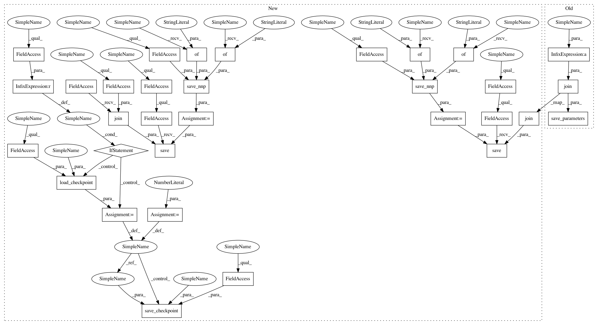

1083caba25ab2e722928eae16b3fd26c6d234a50,imagenet-classification/classification.py,,train,#,79
Before Change
for i in range(args.max_iter):
// Save parameters
if i % args.model_save_interval == 0:
nn.save_parameters(os.path.join(
args.model_save_path, "param_%06d.h5" % i))
// Validation
if i % args.val_interval == 0 and i != 0:
After Change
v_e = F.mean(F.top_n_error(v_pred2, v_model.label))
// Save_nnp_Epoch0
contents = save_nnp({"x": v_model.image}, {
"y": v_model.pred}, args.batch_size)
save.save(os.path.join(args.model_save_path,
"Imagenet_result_epoch0.nnp"), contents)
// Create Solver.
solver = S.Momentum(args.learning_rate, 0.9)
solver.set_parameters(nn.get_parameters())
start_point = 0
if args.checkpoint is not None:
// load weights and solver state info from specified checkpoint file.
start_point = load_checkpoint(args.checkpoint, solver)
// Create monitor.
import nnabla.monitor as M
monitor = M.Monitor(args.monitor_path)
monitor_loss = M.MonitorSeries("Training loss", monitor, interval=10)
monitor_err = M.MonitorSeries("Training error", monitor, interval=10)
monitor_vloss = M.MonitorSeries("Validation loss", monitor, interval=10)
monitor_verr = M.MonitorSeries("Validation error", monitor, interval=10)
monitor_time = M.MonitorTimeElapsed("Training time", monitor, interval=10)
monitor_vtime = M.MonitorTimeElapsed(
"Validation time", monitor, interval=10)
// Training loop.
for i in range(start_point, args.max_iter):
// Save parameters
if i % args.model_save_interval == 0:
// save checkpoint file
save_checkpoint(args.model_save_path, i, solver)
// Validation
if i % args.val_interval == 0 and i != 0:
// Clear all intermediate memory to save memory.
// t_model.loss.clear_recursive()
l = 0.0
e = 0.0
for j in range(args.val_iter):
images, labels = vdata.next()
v_model.image.d = images
v_model.label.d = labels
v_model.image.data.cast(np.uint8, ctx)
v_model.label.data.cast(np.int32, ctx)
v_model.loss.forward(clear_buffer=True)
v_e.forward(clear_buffer=True)
l += v_model.loss.d
e += v_e.d
monitor_vloss.add(i, l / args.val_iter)
monitor_verr.add(i, e / args.val_iter)
monitor_vtime.add(i)
// Clear all intermediate memory to save memory.
// v_model.loss.clear_recursive()
// Training
l = 0.0
e = 0.0
solver.zero_grad()
def accumulate_error(l, e, t_model, t_e):
l += t_model.loss.d
e += t_e.d
return l, e
// Gradient accumulation loop
for j in range(args.accum_grad):
images, labels = data.next()
t_model.image.d = images
t_model.label.d = labels
t_model.image.data.cast(np.uint8, ctx)
t_model.label.data.cast(np.int32, ctx)
t_model.loss.forward(clear_no_need_grad=True)
t_model.loss.backward(clear_buffer=True) // Accumulating gradients
t_e.forward(clear_buffer=True)
l, e = accumulate_error(l, e, t_model, t_e)
solver.weight_decay(args.weight_decay)
solver.update()
monitor_loss.add(i, l / args.accum_grad)
monitor_err.add(i, e / args.accum_grad)
monitor_time.add(i)
// Learning rate decay at scheduled iter
if i in args.learning_rate_decay_at:
solver.set_learning_rate(solver.learning_rate() * 0.1)
nn.save_parameters(os.path.join(args.model_save_path,
"param_%06d.h5" % args.max_iter))
// Save_nnp
contents = save_nnp({"x": v_model.image}, {
"y": v_model.pred}, args.batch_size)
save.save(os.path.join(args.model_save_path,
"Imagenet_result.nnp"), contents)
if __name__ == "__main__":
train()
In pattern: SUPERPATTERN
Frequency: 3
Non-data size: 32
Instances
Project Name: sony/nnabla-examples
Commit Name: 1083caba25ab2e722928eae16b3fd26c6d234a50
Time: 2019-12-03
Author: Shreenidhi.Ramachnadran@sony.com
File Name: imagenet-classification/classification.py
Class Name:
Method Name: train
Project Name: sony/nnabla-examples
Commit Name: 4d4bc2c1ed869fbbfaf401e02052589ac48f8184
Time: 2020-01-13
Author: Shreenidhi.Ramachandran@sony.com
File Name: cifar10-100-collection/classification.py
Class Name:
Method Name: train
Project Name: sony/nnabla-examples
Commit Name: 7331bc49dab2d0078054b25500890f8d3eb7733e
Time: 2020-01-13
Author: Shreenidhi.Ramachnadran@sony.com
File Name: mnist-collection/classification_bnn.py
Class Name:
Method Name: train
Project Name: sony/nnabla-examples
Commit Name: 1083caba25ab2e722928eae16b3fd26c6d234a50
Time: 2019-12-03
Author: Shreenidhi.Ramachnadran@sony.com
File Name: imagenet-classification/classification.py
Class Name:
Method Name: train